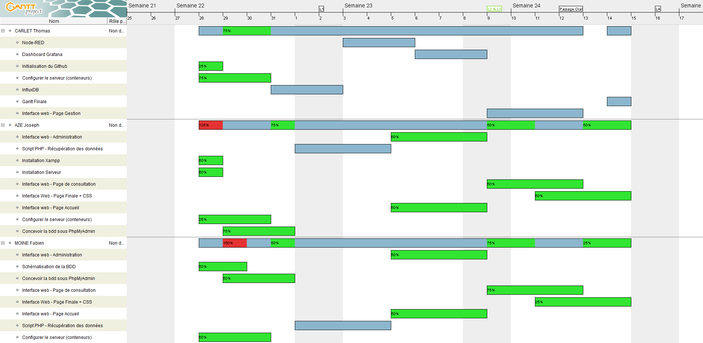
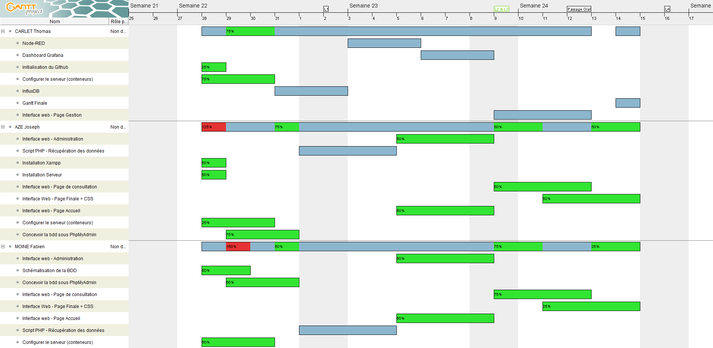
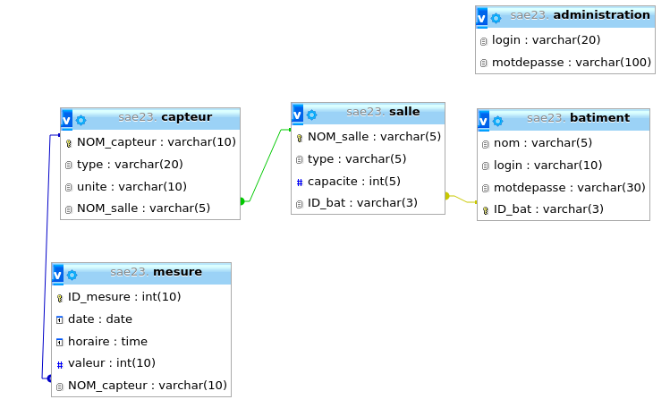
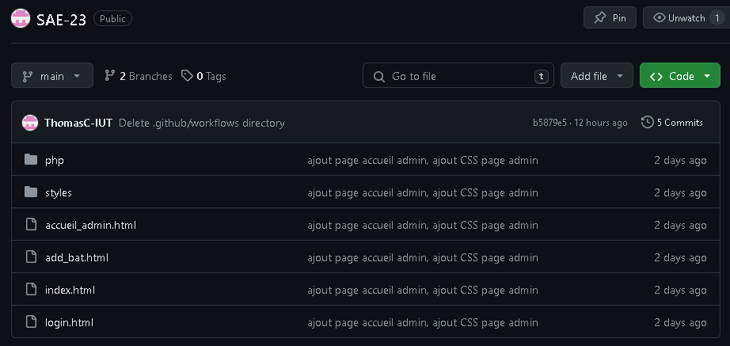

Voici ci-dessous le diagramme de GANTT mis à jour à la fin de la SAE :

Voici ci-dessous les ressources affectées aux tâches :
Voici ci-dessous le diagramme de GANTT mis à jour à la fin de la SAE :
Voici ci-dessous les ressources affectées aux tâches :
Voici ci-dessous le TRELLO mis à jour en la fin de SAE :

Schema de la conception de la base de données :
Image du GitHub apres environ 2 semaine de projet :
Cette SAE a vraiment été interessante car elle proposait un large panel de langage a utiliser. Des parties auraient peut être meritées plus d'attention, surtout sur de l'optimisation de code. Je pense que la SAE reste une reussite car en terme d'apprentissage malgrès le fait que j'aurais aime pouvoir perfectionner certain aspect du site.
Pouvoir se connecter tous en meme temps sur la VM et pouvoir travailler de chez nous.
Faire tourner la VM sur un serveur chez Thomas, et utilisation du logiciel rustdesk pour que tout le monde puisse s'y connecter, réaliser des tunnel TCP...